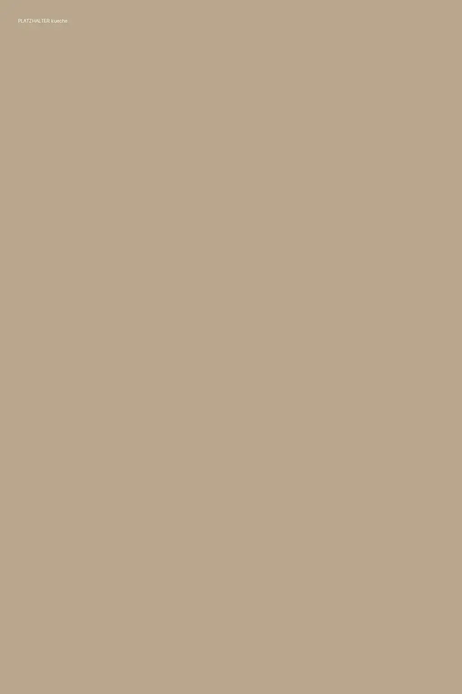

Lindenreuth im Fichtelgebirge
Seit 1887 am Dorfplatz.
Fränkische Küche mit Zutaten aus der Nachbarschaft, sieben Gästezimmer und ein Biergarten unter alten Kastanien. In fünfter Generation geführt.
Heute
Mittwoch bis Sonntag ab 11:30 Uhr
Auf der Tafel
Biergarten
Von Mai bis September bei schönem Wetter
Das Haus
Eine kurze Karte, die wir richtig gut können.


Bei uns gibt es keine Karte mit hundert Gerichten. Dafür kennen wir jeden, der uns Fleisch, Bier und Kartoffeln liefert, beim Vornamen.
Lena Grünlinger führt den Gasthof in fünfter Generation. In der Küche steht ihr Mann Tobias, gelernt hat er in einem Münchner Wirtshaus. Die Klöße macht er jeden Morgen selbst, die Soßen brauchen bei ihm einen ganzen Tag.
Vertäfelung und Eichentische der Stube hat die Schreinerei Kühlbrandt gebaut, drei Straßen weiter am Sägewerk.
Lena und Tobias Grünlinger
Tageskarte
Nur heute, solange es reicht
Neben der festen Karte kocht Tobias jeden Tag ein Gericht, das es nur an diesem Wochentag gibt. Wenn es aus ist, ist es aus.
Mittwoch
- Saure Zipfel mit Bauernbrot12,50
- Kartoffelsuppe mit Majoran6,90
Solange der Vorrat reicht
Wie weit es unsere Zutaten haben Zum Umdrehen auf die Bierdeckel tippen

„Unter den Kastanien schmeckt das Kellerbier einfach besser. Das ist keine Werbung, das ist Physik.“
Lena Grünlinger, Wirtin


Termine
Als Nächstes bei uns
Gutscheine